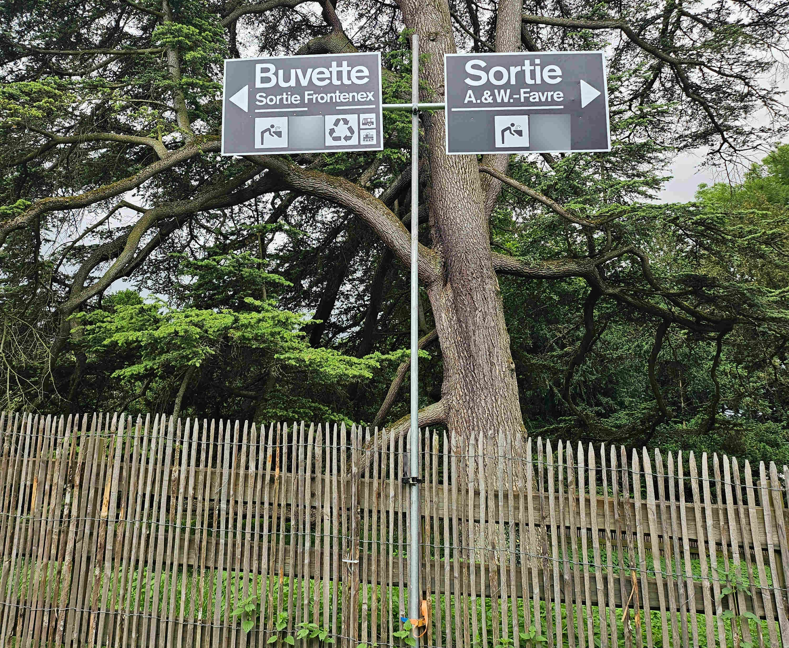
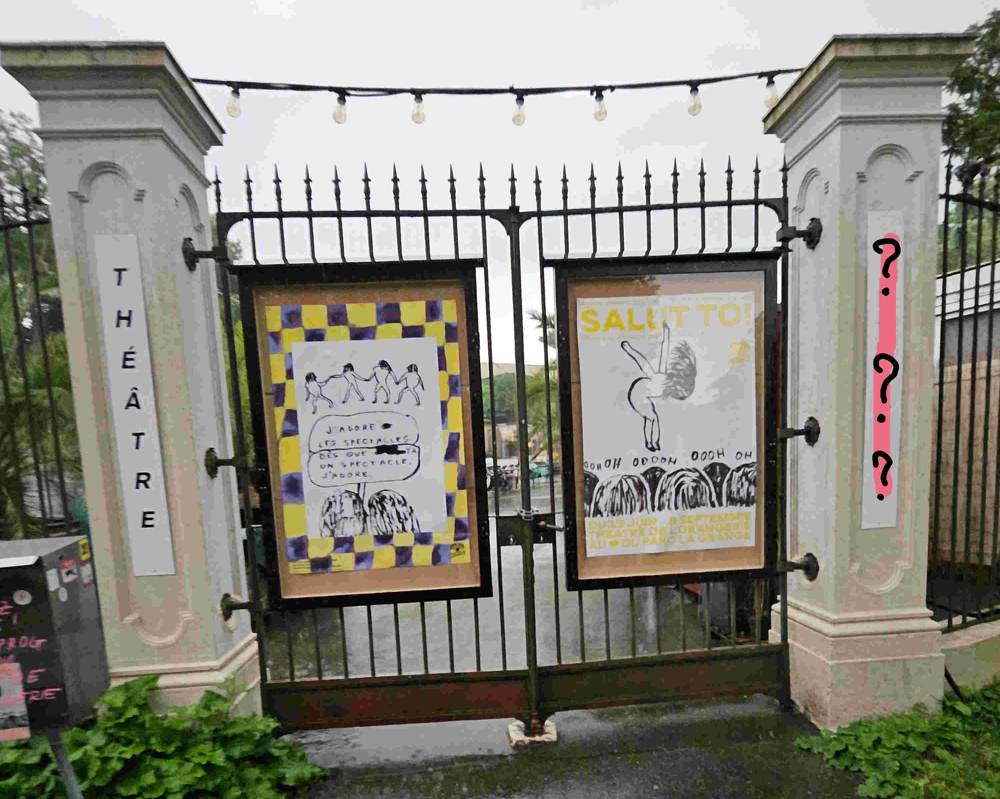

Particularités :Enseignant discret mais passionné, il aurait été vu à plusieurs endroits suspects dans le parc, fredonnant des airs de musique étranges...
Certains élèves l’ont trouvé bizarrement nerveux ces derniers temps, et des indices semblent avoir été laissés par inadvertance.
Énigme 1 - La Photo du Parc
Une photo floue montre une partie du parc. En l'observant attentivement,il manque un élément. Quel est il?
Ce serait là qu'un indice a été aperçu.

Enigme 1 Résolu
Enigme 2
Une autre image retrouvée dans la salle de musique pointe vers un lieu bien particulier du parc... .
Peut-être que les sons qu’il y fredonnait prennent ici tout leur sens.

Enigme 1 Résolu
Enigme 2 Résolu
Enigme 3
Dans son bureau, une partition étrange contenait une musique.
Vous devrez retrouver ces notes et trouver le mot de passe qui se cache derrière cette musique.
lien d'un piano numérique
Enigme 1 Résolu
Enigme 2 Résolu
Enigme 3 Résolu
Enigme 4
Sur une feuille oubliée par le professeur, un numéro de téléphone était griffonné.
En appelant ce numéro, on entend un étrange message audio… c’est du morse. Il faut le décoder.
Appeler le numero
Enigme 1 Résolu
Enigme 2 Résolu
Enigme 3 Résolu
Enigme 4 Résolu
Énigme 5
En approchant de cette étrange sculpture végétale, un élève passionné de musique s’est exclamé :
« On dirait que ça va commencer à bourdonner comme dans ce morceau infernal que le prof jouait au piano… tu sais, celui où ses doigts allaient à toute vitesse ! »
Sur la partition posée dans sa salle, un seul mot était entouré en rouge : bourdon.
Un indice ? Ou une obsession musicale ?
🔍 Retrouvez le nom du compositeur de ce morceau endiablé. C’est lui qu’il faut inscrire pour valider cette énigme.
Enigme 1 Résolu
Enigme 2 Résolu
Enigme 3 Résolu
Enigme 4 Résolu
Enigme 5 Résolu
Fin de l'enquete sur le suspect
Nous avons toutes les informations qu'il faut.. nous devons regarder d'autre suspect.
Dans ses carnets de partitions, un mot revenait sans cesse, entouré, surligné :
2. raconter
Comme si tout ce qu’il faisait n’était qu’un moyen de raconter quelque chose. Peut-être est-ce une piste...Il vaut mieux garder ceci pour plus tard!